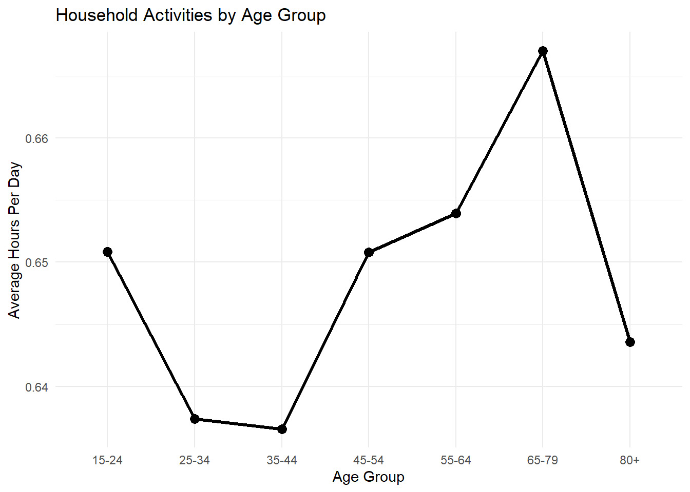

Code
library(tidyverse)
library(glue)
library(httr2)
library(gt)
library(scales)
library(forcats)
library(knitr)Kiran Narsipur
The American Time Use Survey (ATUS) provides a detailed view of how Americans allocate time across work, sleep, household tasks, leisure, education, caregiving, and travel. In this report, I use ATUS microdata from 2003 through 2024 to study how daily time use varies across demographic groups and life stages.
My goal is to combine respondent-level demographic information with activity-level records in order to understand how age, sex, family structure, employment, and school enrollment shape everyday routines in the United States.
Across more than 250,000 ATUS respondents, the results show that daily routines vary meaningfully by age and family role. Household work stays fairly stable across most age groups, though it rises somewhat in later adulthood before dipping among the oldest respondents. The results also suggest that employment status and parenting responsibilities shape time use in visible ways, especially in areas like lawn care, household maintenance, and child-focused activities.
load_atus_data <- function(file_base = c("resp", "rost", "act")) {
if (!dir.exists(file.path("data", "mp02"))) {
dir.create(file.path("data", "mp02"), recursive = TRUE)
}
file_base <- match.arg(file_base)
file_name_out <- file.path("data", "mp02", glue("atus{file_base}_0324.dat"))
if (!file.exists(file_name_out)) {
url_end <- glue("atus{file_base}-0324.zip")
temp_zip <- tempfile(fileext = ".zip")
temp_dir <- tools::file_path_sans_ext(temp_zip)
request("https://www.bls.gov") |>
req_url_path("tus", "datafiles", url_end) |>
req_headers(`User-Agent` = "Mozilla/5.0") |>
req_perform(path = temp_zip)
unzip(temp_zip, exdir = temp_dir)
file.copy(
file.path(temp_dir, basename(file_name_out)),
file_name_out,
overwrite = TRUE
)
}
file <- read_csv(file_name_out, show_col_types = FALSE)
switch(
file_base,
resp = file |>
rename(
participant_id = TUCASEID,
survey_weight = TUFNWGTP,
survey_year = TUYEAR,
time_alone = TRTALONE,
children_in_home = TRCHILDNUM,
spouse_present = TRSPPRES,
labor_force_status = TELFS,
enrolled_school = TESCHENR,
school_level = TESCHLVL
),
rost = file |>
rename(
participant_id = TUCASEID,
line_number = TULINENO,
age = TEAGE
) |>
mutate(
sex = case_when(
TESEX == 1 ~ "Male",
TESEX == 2 ~ "Female",
TRUE ~ NA_character_
)
),
act = file |>
rename(
participant_id = TUCASEID,
where_code = TEWHERE
) |>
mutate(
activity_n_of_day = TUACTIVITY_N,
time_spent_min = TUACTDUR24,
start_time = TUSTARTTIM,
stop_time = TUSTOPTIME,
level1_code = paste0(TRTIER1P, "0000"),
level2_code = paste0(TRTIER2P, "00"),
level3_code = TRCODEP
)
)
}
load_atus_activities <- function() {
dest_file <- file.path("data", "mp02", "atus_activity_codes.csv")
if (!file.exists(dest_file)) {
download.file(
"https://michael-weylandt.com/STA9750/mini/atus_activity_codes.csv",
destfile = dest_file,
mode = "wb",
quiet = TRUE
)
}
read_csv(dest_file, show_col_types = FALSE)
}
resp <- load_atus_data("resp")
rost <- load_atus_data("rost")
act <- load_atus_data("act")
activities <- load_atus_activities()respondent_demo <- rost |>
filter(line_number == 1) |>
select(participant_id, age, sex)
atus_resp <- resp |>
left_join(respondent_demo, by = "participant_id") |>
mutate(
children_in_home = if_else(children_in_home < 0, NA_real_, children_in_home),
married = case_when(
spouse_present == 1 ~ "Married",
TRUE ~ "Not Married"
),
retired = labor_force_status == 5,
employment_status = case_when(
labor_force_status %in% c(1, 2) ~ "Employed",
labor_force_status == 3 ~ "Unemployed",
labor_force_status == 4 ~ "Not in Labor Force",
labor_force_status == 5 ~ "Retired",
TRUE ~ "Other"
),
college_student = enrolled_school == 1 & school_level %in% c(4, 5),
age_group = cut(
age,
breaks = c(15, 25, 35, 45, 55, 65, 80, Inf),
labels = c("15-24", "25-34", "35-44", "45-54", "55-64", "65-79", "80+"),
right = FALSE
)
)
atus_full <- act |>
left_join(atus_resp, by = "participant_id") |>
left_join(activities, by = c("level3_code" = "code_level3")) |>
mutate(hours_spent = time_spent_min / 60)There are 252,808 respondents in the dataset.
[1] 3ATUS includes 3 distinct sports-watching activities.
[1] 32.17863Approximately 32.2% of Americans are retired.
[1] 4.038134The average American sleeps 4.04 hours per day.
lawn_table <- atus_full |>
filter(str_detect(str_to_lower(task_level3), "lawn")) |>
filter(employment_status %in% c("Retired", "Employed")) |>
group_by(employment_status) |>
summarize(
avg_hours = weighted.mean(hours_spent, survey_weight, na.rm = TRUE),
.groups = "drop"
) |>
mutate(avg_hours = round(avg_hours, 2))
kable(lawn_table)| employment_status | avg_hours |
|---|---|
| Employed | 1.65 |
| Retired | 1.55 |
The difference between retirees and employed respondents is fairly small, but employed respondents in this output spend slightly more time on lawn care. One possible explanation is that lawn work is an intermittent household task shaped more by homeownership and seasonality than by labor force status alone. It may also reflect that employed respondents who do lawn care tend to do it in concentrated blocks of time on the days they report it.
household_data <- atus_full |>
filter(
str_detect(str_to_lower(task_level3), "clean|laundry|food|housework")
) |>
group_by(age_group) |>
summarize(
avg_hours = weighted.mean(hours_spent, survey_weight, na.rm = TRUE),
.groups = "drop"
)
ggplot(household_data, aes(age_group, avg_hours, group = 1)) +
geom_line(linewidth = 1.2) +
geom_point(size = 3) +
labs(
title = "Household Activities by Age Group",
x = "Age Group",
y = "Average Hours Per Day"
) +
theme_minimal()
Household activity time is fairly stable across the life course, with only modest variation from one age group to the next. The lowest levels appear among adults in the 25–44 range, while the highest level appears among respondents ages 65–79. After that, household time drops again for the 80+ group, which makes intuitive sense because very old adults may reduce physically demanding household tasks.
stay_home_dads <- atus_full |>
filter(
sex == "Male",
married == "Married",
children_in_home > 0,
employment_status != "Employed"
)
stay_home_dad_summary <- stay_home_dads |>
filter(
str_detect(
str_to_lower(task_level3),
"child|sleep|television|food|exercise"
)
) |>
group_by(task_level3) |>
summarize(
typical_hours = median(hours_spent, na.rm = TRUE),
.groups = "drop"
) |>
arrange(desc(typical_hours))
kable(stay_home_dad_summary, digits = 2)| task_level3 | typical_hours |
|---|---|
| Sleeping | 4.00 |
| Playing sports with non-household children | 2.58 |
| Income-generating hobbies, crafts, and food | 2.00 |
| Looking after non-household children (as primary activity) | 1.88 |
| Attending non-household children’s events | 1.75 |
| Attending household children’s events | 1.71 |
| Television and movies (not religious) | 1.67 |
| Television (religious) | 1.50 |
| Other Activities related to household child’s health | 1.33 |
| Playing with non-household children, not sports | 1.23 |
| Other Activities related to household child’s education | 1.03 |
| Arts and crafts with household children | 1.00 |
| Food preparation, presentation, clean-up | 1.00 |
| Home schooling of household children | 1.00 |
| Homework (household children) | 1.00 |
| Looking after household children (as a primary activity) | 1.00 |
| Meetings and school conferences (household children) | 1.00 |
| Playing sports with household children | 1.00 |
| Playing with household children, not sports | 1.00 |
| Sleeplessness | 1.00 |
| Waiting associated with household children’s health | 1.00 |
| Other Caring for and helping non-household children | 0.82 |
| Obtaining medical care for household children | 0.75 |
| Homework (non-household children) | 0.67 |
| Food and drink preparation | 0.50 |
| Kitchen and food clean-up | 0.50 |
| Reading to or with household children | 0.50 |
| Reading to or with non-household children | 0.50 |
| Shopping, except groceries, food, and gas | 0.50 |
| Waiting for or with non-household children | 0.38 |
| Physical care for household children | 0.33 |
| Physical care for non-household children | 0.33 |
| Organization and planning for household children | 0.25 |
| Other Caring for and helping household children | 0.25 |
| Storing interior household items, including food | 0.25 |
| Travel related to participating in sports, exercise, or recreation | 0.25 |
| Waiting for or with household children | 0.25 |
| Food presentation | 0.17 |
| Other Food and drink preparation, presentation, and clean-up | 0.17 |
| Providing medical care to household children | 0.17 |
| Purchasing food (not groceries) | 0.17 |
| Using paid childcare services | 0.17 |
| Picking up or dropping off household children | 0.08 |
| Dropping off or picking up non-household children | 0.03 |
| Telephone calls to or from paid child or adult care providers | 0.03 |
The median activity profile suggests that stay-at-home dads divide their days across sleep, childcare, media consumption, and food-related tasks. Sleeping is the single largest activity in the summary, while several child-centered activities such as sports, events, supervision, and school-related involvement also appear prominently. Taken together, the results suggest that caregiving is not limited to one narrow task, but instead spreads across many parts of the day, from direct care to transportation, event attendance, and educational support.
Overall, this analysis shows that time use is shaped by both demographic position and household role. Age patterns in household work are present but not dramatic, while family structure and caregiving responsibilities appear more strongly in the subgroup analysis. The stay-at-home dads example in particular shows how time use data can reveal a day made up of many small but meaningful forms of labor rather than just one dominant responsibility.
R version 4.5.2 (2025-10-31 ucrt)
Platform: x86_64-w64-mingw32/x64
Running under: Windows 11 x64 (build 26200)
Matrix products: default
LAPACK version 3.12.1
locale:
[1] LC_COLLATE=English_United States.utf8
[2] LC_CTYPE=English_United States.utf8
[3] LC_MONETARY=English_United States.utf8
[4] LC_NUMERIC=C
[5] LC_TIME=English_United States.utf8
time zone: America/New_York
tzcode source: internal
attached base packages:
[1] stats graphics grDevices utils datasets methods base
other attached packages:
[1] knitr_1.51 scales_1.4.0 gt_1.3.0 httr2_1.2.2
[5] glue_1.8.0 lubridate_1.9.5 forcats_1.0.1 stringr_1.6.0
[9] dplyr_1.2.0 purrr_1.2.1 readr_2.2.0 tidyr_1.3.2
[13] tibble_3.3.1 ggplot2_4.0.2 tidyverse_2.0.0
loaded via a namespace (and not attached):
[1] rappdirs_0.3.4 generics_0.1.4 xml2_1.5.2 stringi_1.8.7
[5] hms_1.1.4 digest_0.6.39 magrittr_2.0.4 evaluate_1.0.5
[9] grid_4.5.2 timechange_0.4.0 RColorBrewer_1.1-3 fastmap_1.2.0
[13] jsonlite_2.0.0 cli_3.6.5 rlang_1.1.7 crayon_1.5.3
[17] bit64_4.6.0-1 withr_3.0.2 yaml_2.3.12 otel_0.2.0
[21] tools_4.5.2 parallel_4.5.2 tzdb_0.5.0 vctrs_0.7.2
[25] R6_2.6.1 lifecycle_1.0.5 fs_1.6.7 htmlwidgets_1.6.4
[29] bit_4.6.0 vroom_1.7.0 pkgconfig_2.0.3 pillar_1.11.1
[33] gtable_0.3.6 xfun_0.57 tidyselect_1.2.1 rstudioapi_0.18.0
[37] farver_2.1.2 htmltools_0.5.9 labeling_0.4.3 rmarkdown_2.30
[41] compiler_4.5.2 S7_0.2.1 For this assignment, I used generative AI tools to help debug R code, troubleshoot data-loading errors, and generate an initial Quarto document structure. I also used AI to help draft code for cleaning, joining, and analyzing the ATUS datasets. All analyses, variable choices, interpretations, and final written conclusions were reviewed, modified, and verified by me before submission.